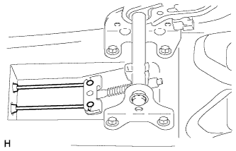

РЫЧАГ СТОЯНОЧНОГО ТОРМОЗА > СНЯТИЕ |
| 1. СНИМИТЕ ВЕЩЕВОЙ ЯЩИК В ОБЛИЦОВКЕ ТУННЕЛЯ ПОЛА В СБОРЕ |
Для моделей с автоматической трансмиссией:
Снимите вещевой ящик в облицовке туннеля пола в сборе (Нажмите здесь).
Для моделей с механической трансмиссией:
Снимите вещевой ящик в облицовке туннеля пола в сборе (Нажмите здесь).
Для моделей с холодильной камерой:
Снимите вещевой ящик в облицовке туннеля пола в сборе (Нажмите здесь).
| 2. СНИМИТЕ РЫЧАГ СТОЯНОЧНОГО ТОРМОЗА В СБОРЕ |
Отпустите рычаг стояночного тормоза.
Отсоедините разъем выключателя стояночного тормоза.
 |
Отверните регулировочную гайку.
|  |
Отсоедините трос привода стояночного тормоза № 2 и трос привода стояночного тормоза № 3 от тяги привода стояночного тормоза № 1.
Снимите тягу привода стояночного тормоза № 1, втулку и пружину сжатия с рычага стояночного тормоза.
Извлеките штырь из рычага стояночного тормоза.
Выверните 4 болта и снимите рычаг стояночного тормоза.
| 3. СНИМИТЕ ВЫКЛЮЧАТЕЛЬ СТОЯНОЧНОГО ТОРМОЗА В СБОРЕ |
 |
Выверните винт и снимите выключатель стояночного тормоза с рычага стояночного тормоза.
 |
Отсоедините разъем.